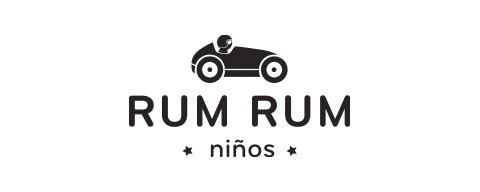

Belleza con Trayectoria. Negocios con Propósito.
Nacida en la provincia de Tucumán, Lara Bernasconi descubrió su vocación siendo muy joven. A los 14 años comenzó a transitar las pasarelas en su provincia natal y, con gran determinación, a los 17 se instaló en Buenos Aires con el sueño de profesionalizarse. Allí fue descubierta por Ricardo Piñeiro y rápidamente se consolidó como una de las top models más destacadas de Argentina. Durante las décadas de los 90 y 2000, su elegancia y fuerte presencia editorial la llevaron a protagonizar innumerables revistas, campañas y desfiles para grandes diseñadores de lujo.
Sin embargo, su espíritu emprendedor siempre la impulsó a ir más allá. Quería complementar su éxito frente a las cámaras con la creación de proyectos de impacto real. Ese impulso la llevó a incursionar en el mundo empresarial, prestando especial foco a marcas con propósito. Un claro ejemplo es Rum Rum, la firma de moda infantil gestionada junto a su pareja Federico Álvarez Castillo e inspirada en su hijo Iñaki. Este proyecto es un reflejo de su visión de diseño, donde priman lo consciente, lo atemporal y la nobleza de los materiales utilizados.
Hoy, Lara equilibra de manera armónica su espíritu emprendedor con su vida en familia y su enorme compromiso social e impacto positivo. Como madrina y embajadora de la Fundación Banco de Alimentos de Tucumán por más de 15 años, utiliza activamente su trayectoria y visibilidad para generar transformaciones en su provincia natal. Su historia es la demostración de una trayectoria en la cual la moda y la belleza se enaltecen cuando van de la mano del verdadero propósito, la sencillez y la autenticidad.
Versatilidad, Elegancia Atemporal y Presencia Editorial.

Indumentaria infantil con propósito: Calidad, Simpleza y Diseño Consciente.
Rol: Fundadora y Directora Creativa. Liderando la expansión a nuevos mercados.
Filosofía: Enfocada en la calidad y durabilidad de materiales nobles, con una visión de moda infantil unisex y atemporal.
Visita Rum RumLara Bernasconi combina su profundo conocimiento de la industria de la moda con una visión de negocios orientada al propósito, liderando exitosamente proyectos de diseño y bienestar.
Fundación Banco de Alimentos de Tucumán (15+ años de compromiso).
Defensora de la salud, la aceptación personal la autenticidad, utilizando su plataforma para fomentar el bienestar.